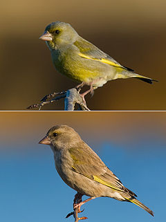
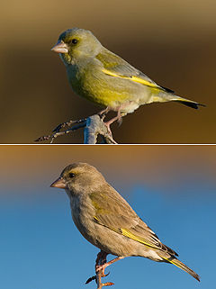

| European Greenfinch | |
|---|---|
|  | |
| Male above, female below | |
| Conservation status | |
| Binomial name | |
| Carduelis chloris (Linnaeus, 1758) |
|
| Synonyms | |
|
Chloris chloris (but see article text) |
| European Greenfinch | |
|---|---|
|  | |
| Male above, female below | |
| Conservation status | |
| Binomial name | |
| Carduelis chloris (Linnaeus, 1758) |
|
| Synonyms | |
|
Chloris chloris (but see article text) |
The European Greenfinch, or just Greenfinch, Carduelis chloris, is a small passerine bird in the finch family Fringillidae. The genus Carduelis might be split up and in this case, the greenfinches would be separated in their old genus Chloris again.
This bird is widespread throughout Europe, north Africa and south west Asia. It is mainly resident, but some northernmost populations migrate further south. The Greenfinch has also been introduced into both Australia and New Zealand.
Woodland edges, farmland hedges and gardens with relatively thick vegetation are favoured for breeding. It nests in trees or bushes, laying 3-8 eggs.
This species can form large flocks outside the breeding season, sometimes mixing with other finches and buntings. They feed largely on seeds, but also take berries and seeds.
The Greenfinch is 15 cm in length with a wing span of 24.5-27.5 cm and is similar in size and shape to a House Sparrow,[2] but is mainly green, with yellow in the wings and tail. The female and young birds are duller and have brown tones on the back. The bill is thick and conical. The song contains wheezes and twitters, and the male has a "butterfly" display flight.

{kind=link}